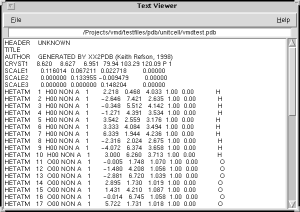

<!--#set var="TITLE" value="Text Viewer Plugin, Version 1.0"-->
<!--#include virtual="/Research/vmd/include/header-vmd.shtml"-->

<table border="0">
<tr>
  <td rowspan="4">
  <p>
  This plugin provides a very simple built-in text file viewer and
  editor for VMD.  It can be used by other plugins in place of having to
  find a platform-specific text editor when one is needed.
  </td>

  <td>   
  
  <br><b>Text Viewer Window</b> 
  </td>
</tr>
</table>

<!--#include virtual="/Research/vmd/include/footer-vmd.shtml"-->

